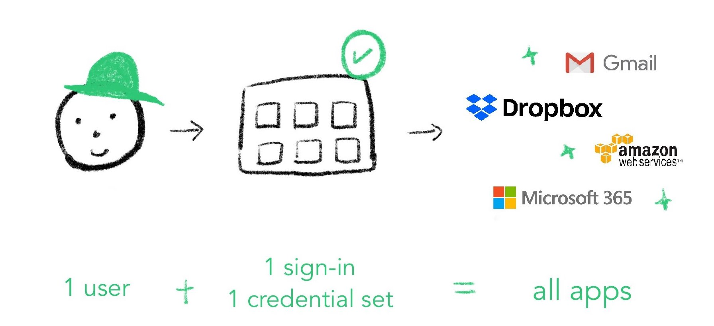

Duo Security
2020 Summer Internship in Single Sign-on team.

Time
May - Aug. 2020
Role
Product Design
Skills
Product thinking
Product research
Interaction design
Project planning
Visual design
Tools
Marvel
Sketch
Abstract
Mural
My Mission
My mission at Duo is to communicate Duo's value through design.
The origin of the project came from my passion for sustainability. I have done other projects regarding sustainability and feels like there are more needs to be done, and one of which is the daily sustainable behaviour. I have observed a serious problem happening daily — the disposable eating utensils, which includes containers and cutlery. People eat out and use these disposable eating containers and other utensils automatically, without pausing and realizing that they can actually make a lot of change if they just bring a container to reuse. As a result, one of the goals of my master’s studies at the University of Michigan is to design a sustainable app that can help people develop sustainable habits, and I am also aiming to submit this project to CHI 2020 Student Game Competition.
Introduction
Over the summer, I worked on the Single Sign-on team to help optimize the admin’s experience of managing different applications for their end-users. Although I had two seemingly different projects, I found the underlying pattern -- I am conveying Duo's value in distinctive forms.
Single Sign-on
Single Sign-on is a service to help streamline the sign-in process for end-users because users only need to remember one set of credentials and log in once to access other dozens of applications.
Takeaways
Communication, communication and communication
Among all of the learnings in the summer, communication is my biggest takeaway. Why? As a designer working in a team, communication, to some points, has become even more important than hard design techniques because sharing information to teammates effectively and correctly is the key to create values, not only for the company but also for ourselves.
Being aware of sharing work for feedback, early
At school, we always learned the concept of getting feedback early to iterate on ideas fast and effective. However, according to G.I. Joe Fallacy, knowing is merely halfway as putting something into practice. Looking back now, I just realized how different it is to consciously practice it at work.
Although I did include as many others as possible to get feedback, in the end, I wish I had included others earlier in the development stage. In reflection, I realized getting feedback wasn’t primed in my mind when I started design projects at Duo. Instead, I was occupied to get to know the product, the technical knowledge and the working culture.
Product thinking
At school, we learn design thinking methodologies and user-centered design techniques. However, we never learned how to strategize product-market fit, in which product design also plays a huge part. In this internship, I had the chance to step outside of design and think from a holistic perspective. I get to see where design plays its part in shaping the product's vision and how the market sculpts our products. This strategic thinking in product design is one of the most valuable experiences I obtained in the internship.